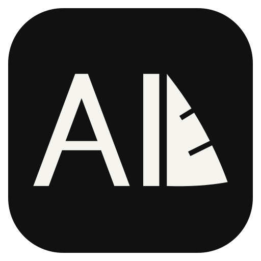

先看首屏气质，再打开完整页面体验。每套方案都保留原有视频作为第二屏。
保留 A 的居中标题、输入框尺寸和顶部模型跑马灯，换上 B 的蓝紫与暖橙渐变底色。
蓝紫光场与炭黑输入框，大标题左对齐。延续图 2 的视觉气氛，模型跑马灯放在输入框下方。
首屏直接进入大输入框，收起外部大标题。深色底与浅绿色操作按钮，最贴近“只放一个 Prompt”。
A 已接入完整首页，原页面内容接在新首屏后方；B、C 保留为设计预览。
模型名称与 SVG 图标来自 CapyAI。A 的 Prompt 和参考素材可带入现有 Agent 创作空间。